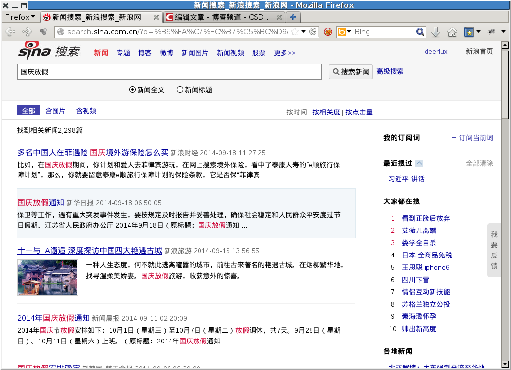

因为工作原因要到网络上抓取一些新闻数据来分析，实在不想自己手动解析链接页面，再 重新requests，还要处理多页的问题，一直听说scrapy是个很不错的工具，但一直都没有 花心思学一下，最近几天看了一下，并自己动手编了个程序试了试，确实非常方便。
顺便说一句，网上很多人发的文章都是翻译的官方的Tutorial，官方的Tutorial是挺不错 ，但是用到的功能都很基本，抓单个网页分析的话看一下还可以，抓多个网页的功能根本 学不到要，下面以从新浪新闻中抓取文章为例说明，也是我本人学习的一个过程。
比如想要搜关于“国庆放假”的新闻，搜出来的结果如下图所示：
我是想把所有搜出来的新闻打开后抓取其标题、新闻来源、发布时间、新闻正文，然后把 相关的内容存储起来准备分析处理，当然不能只抓取搜出来的第一页，而是要把所有的“下 一页”遍历一遍，再抓取。
scrapy startproject sinanews
会生成一个sinanews的目录，然后其中会包含一些必须的文件，网上介绍这些文件干什么 用的文章挺多，就不再重复了，只说实现上述功能我们要修改的文件。
要存储下来的数据都要存储在Item中，其实它就是一个特殊的dict，在startproject的时 候已经生成了一个基本的模板，你只需要类的定义中加入一些你想要存储的数据结构并把 它们定义为Field()即可。修改items.py文件：
1 2 3 4 5 6 7 8 9 | from scrapy.item import Item, Field
class SinanewsScrapyItem(Item):
# define the fields for your item here like:
# name = Field()
title = Field()
source = Field()
public_time = Field()
text = Field()
|
Spider是抓取的主力军，这个类最为关键，这个类相关的文件并没有自动生成，需要自己 手动新建一个，取名为sinanews_spider.py：
# -*- coding=utf8 -*-
from scrapy.contrib.spiders import CrawlSpider, Rule
from scrapy.contrib.linkextractors import LinkExtractor
from scrapy import log
from sinanews_scrapy.items import SinanewsScrapyItem
class SinanewsSpider(CrawlSpider):
name = 'sinanews'
allowed_domains=['sina.com.cn']
start_urls = ['http://search.sina.com.cn/?q=%CF%B0%BD%FC%C6%BD+%BD%B2%BB%B0&range=title&c=news&sort=time&page=114']
rules = [Rule(LinkExtractor(allow = '/.+/\d+.shtml',
deny = '/171826152112.shtml'),
'parse_news'),
Rule(LinkExtractor(restrict_xpaths = u"//a[@title='下一页']"),
callback = 'parse_next')]
def parse_news(self, response):
news = SinanewsScrapyItem()
temp = response.xpath("//h1[@id='artibodyTitle']//text()").extract()
news['title'] = temp[0] if temp else ''
temp = response.xpath("//span[@id='media_name']//text()").extract()
news['source'] = temp[0] if temp else ''
temp = response.xpath("//span[@id='pub_date']//text()").extract()
news['public_time'] = temp[0] if temp else ''
temp = response.xpath("//div[@id='artibody']//p//text()").extract()
news['text'] = '\n'.join(temp) if temp else ''
log.msg(': '.join([response.url, news['title']]), level=log.INFO)
return news
def parse_next(self, response):
log.msg(response.url)
return self.make_requests_from_url(response.url)
scrapy crawl sinanews -o sinanews.json